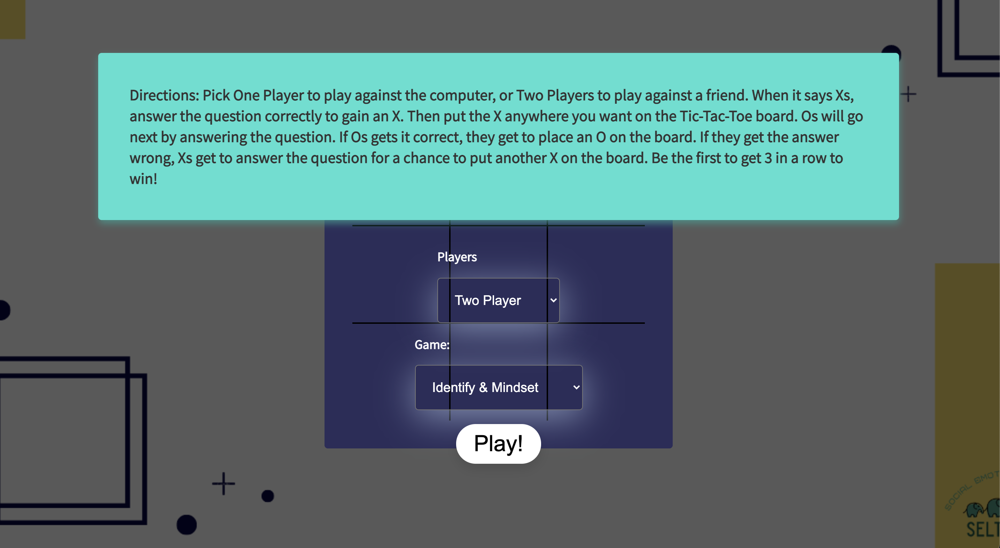

5th Grade level
I built and designed this Tic Tac Toe game for SELTrove to use in their social media advertising. Students and educators can play the game as a fun way to learn about the unique lessons SELTrove offers.
This is a single page application that includes single player or multi player options as well as 4 different Social-Emotional Learning question sets to choose from. Users are asked questions from SELTrove's Social-Emotional Learning curriculum that they must answer before each turn on the tic tac toe board.
The questions asked are stored in an array of objects. This allowed me to easily generate the questions to the user in random order, keeping the game more dynamic. The first key-value pair is the question the second is the answer. This allowed me to use the same array for generating the question in random order, populating the dropdown menu to answer the question and check for the correct answer all with the same array.
The page changes with display none to display flex with a set time out of 20ms to opacity 1 allowing for a smooth transition between displays.